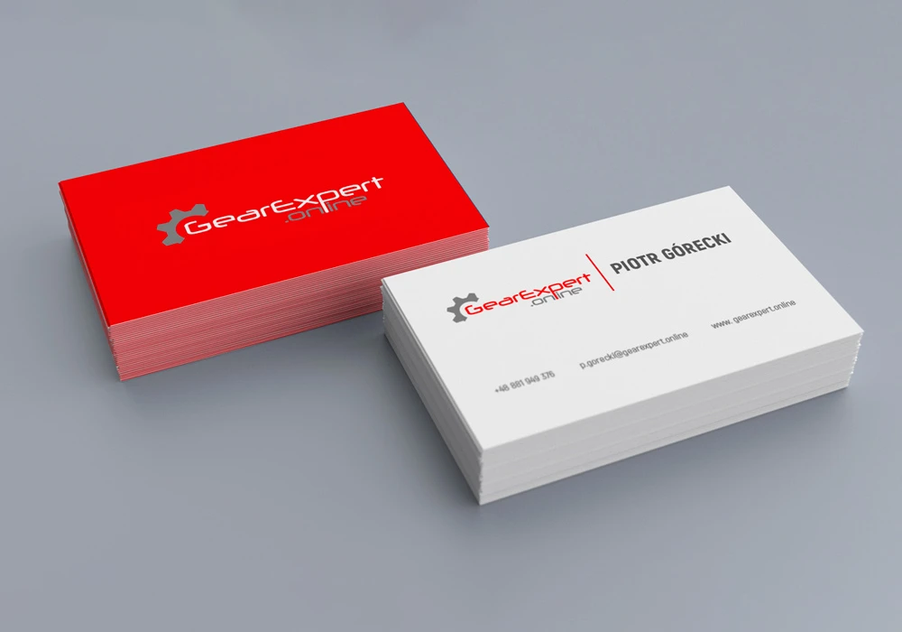
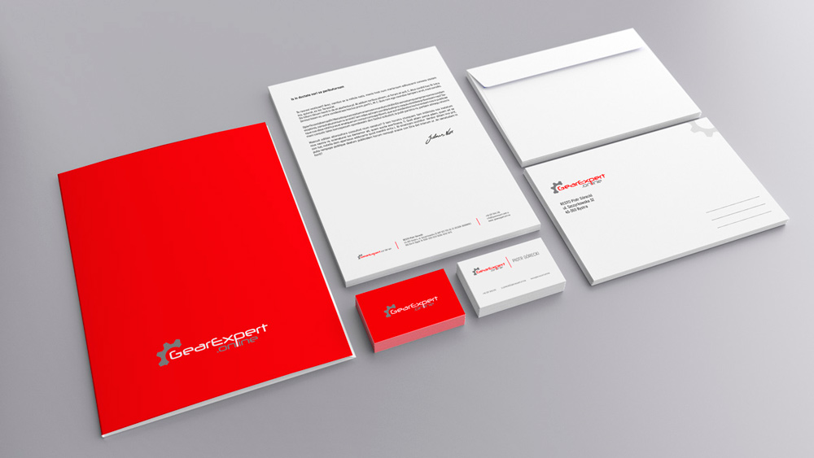
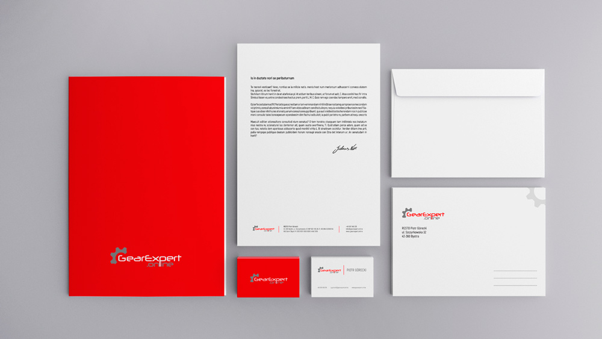

![Grafmen]()
Logo / branding
GearExpert
Identyfikacja wizualna obejmująca logo i materiały firmowe.

01 / POTRZEBA
Precyzja mechaniki w dynamicznym znaku.
Marka GearExpert specjalizuje się w diagnostyce, regeneracji i serwisie skrzyń biegów oraz precyzyjnych przekładni mechanicznych.
Wymagana była wyrazista tożsamość wizualna nawiązująca do mechaniki kół zębatych, nowoczesnej technologii i najwyższych standardów serwisowych.
02 / ZAKRES
Co zrobiłem
- Projekt logotypu łączącego symbolikę koła zębatego z dynamicznym liternictwem.
- Paleta barw oparta na technicznych kontrastach i precyzyjnej geometrii.
- Projekt materiałów warsztatowych i biurowych: wizytówki, formularze przyjęć, naklejki.
- Wizualizacje oznakowania serwisu i elementów identyfikacji pojazdów.
03 / REALIZACJA
Projekt w zastosowaniu



04 / REZULTAT
Identyfikacja wizualna dla branży motoryzacyjnej.
Projekt obejmował opracowanie identyfikacji wizualnej, logo oraz podstawowych materiałów firmowych.